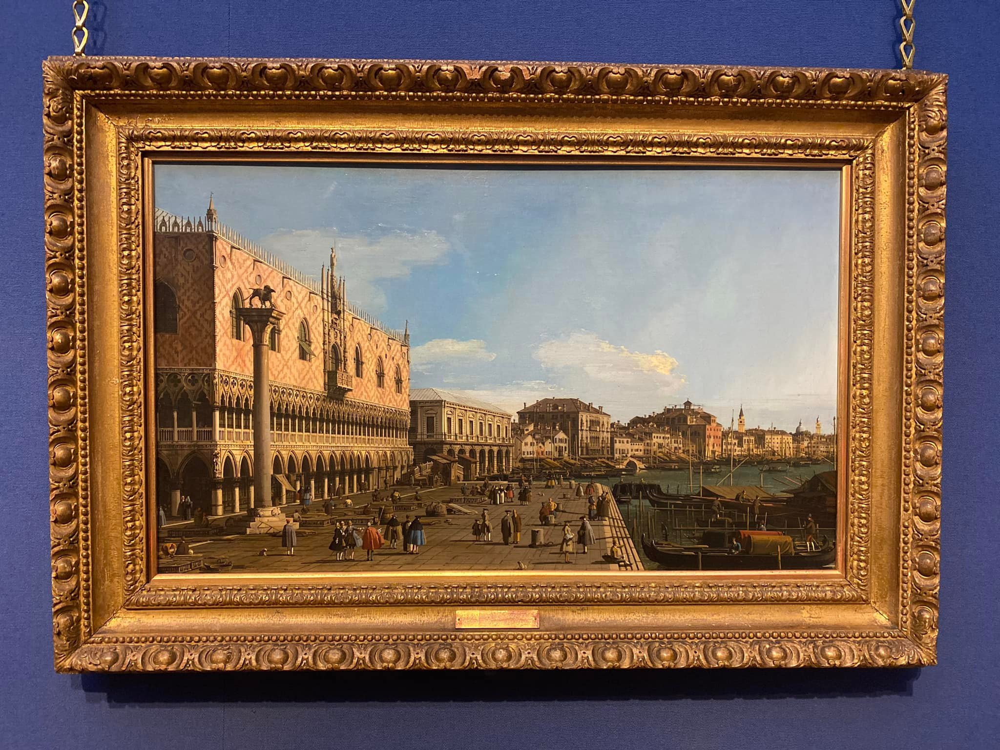
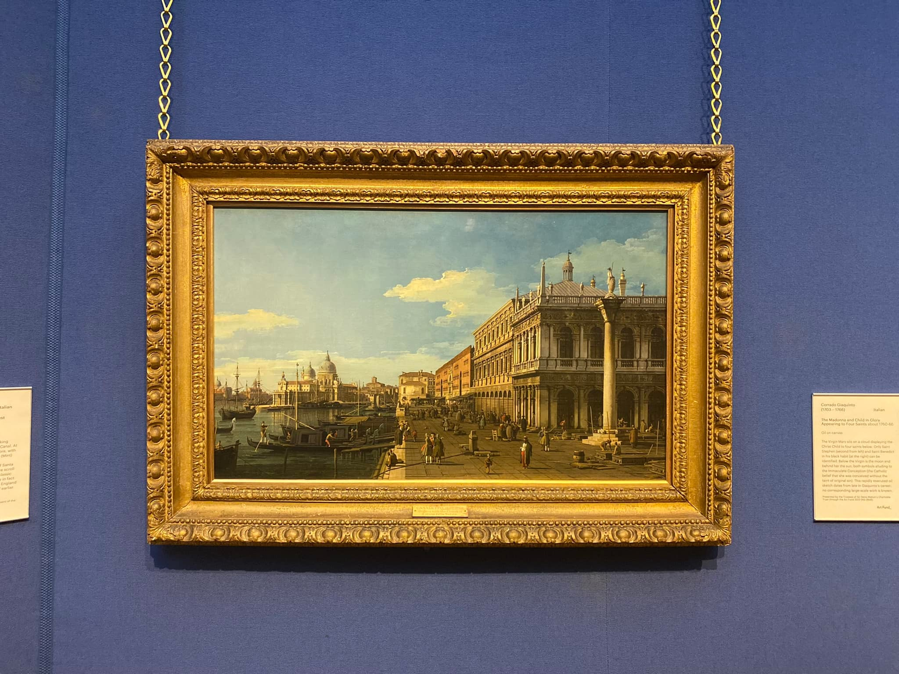
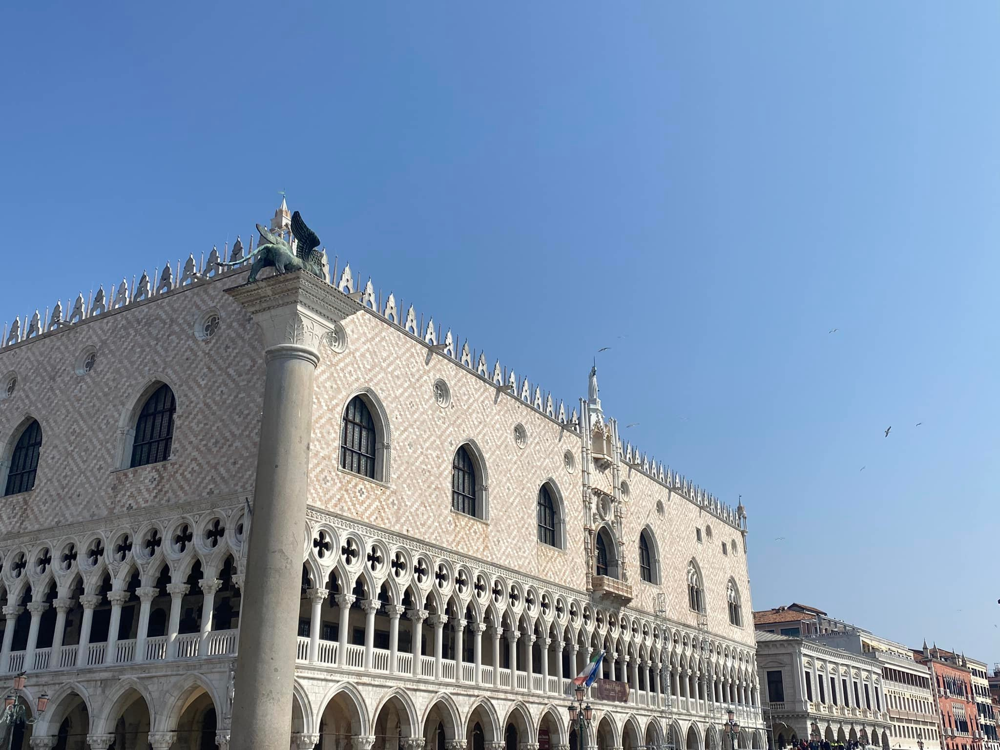
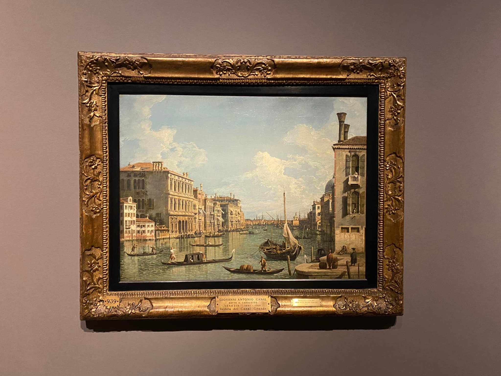
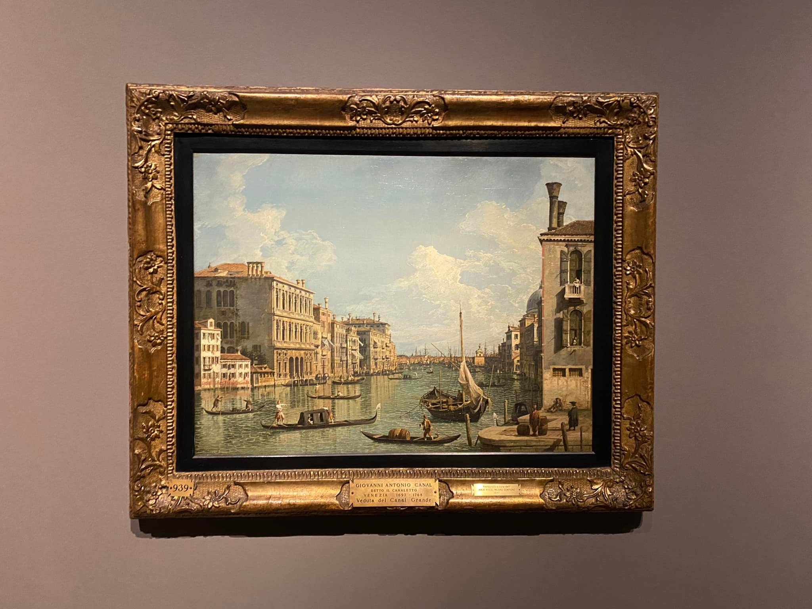
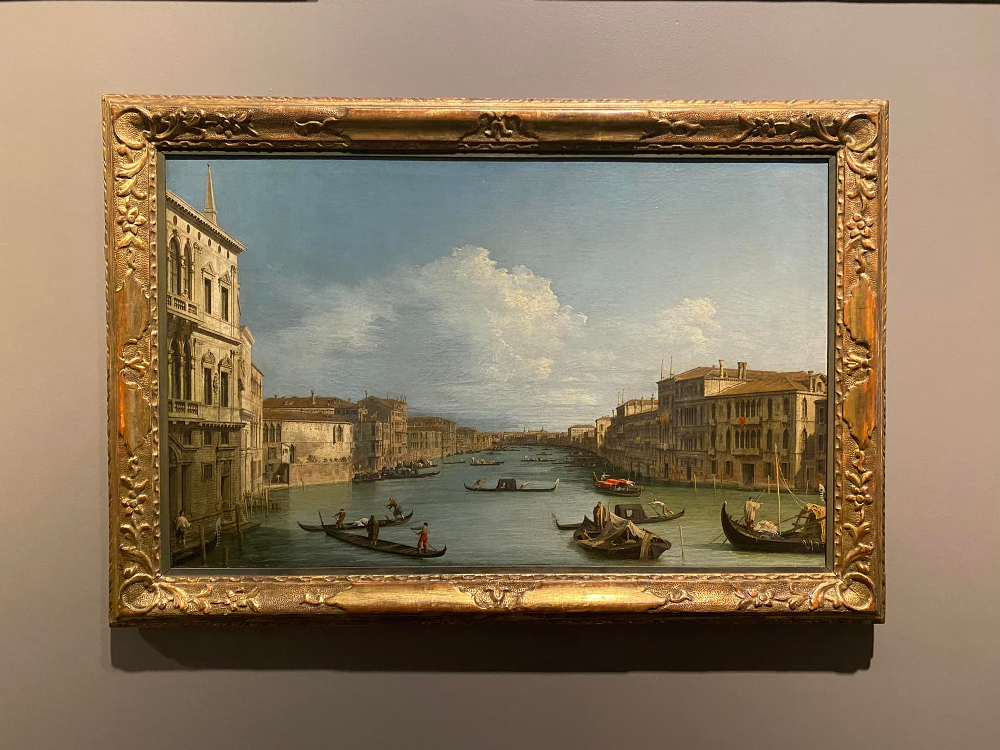

Whenever I visit an art gallery, I like to play a game that I call Canaletto hunting
Canaletto

Who was Canaletto? Giovanni Antonio Canal (1697 - 1768) was a Venitian painter famous for capturing striking scenes of Venice (and other cities when visiting). These paintings were particularly popular amongst rich visitors to the city, and as a result, a few centuries later, his works can be found in most major galleries. The reason I am drawn to these paintings is because, from my perspective, they act as a form of postcard for the incredibly rich. Having visited Venice in the summer of 2022, it is also nice to compare the centuries of difference (or, in most cases, similarity).
Canaletto Hunting
Now for the fun part, below I will compile a list of my Canaletto finds, updating it as I visit new galleries. I'll only post a couple of photos per gallery, since posting each individual piece would likely clutter the page. If you want to see the full collection, I encourage you to visit the galleries in person!
Scottish National Gallery - Edinburgh
 (09/01/2022)
My first recorded encounter with Canaletto's work took place on the 9th of January 2022 in the Scottish National Gallery. Here we see two views taken at 180 degrees (pi radians) from the same spot. Dominating the left painting is Palazzo Ducale, originally built in 1340 it was the former residence of the Venitian Doge (much wow). Sat in front of the palace is the Lion of Venice, the original ancient statue that became the main symbol of the city (indeed, this is the same winged lion you may find on the flag of Venice). On the right-hand, sat modestly in the background, is the Santa Maria della Salute, an astonishing Roman Catholic Church, completed in 1687. We can compare the first painting of Palazo Ducale to a view from (almost) the exact same spot when I visited Venice 6th April 2022. As hinted at within the introduction, nothing much has changed.
Pinacoteca di Brera - Milan
 

(04/03/2022)
Here, the left-hand picture offers a view of Piazza San Marco from across the water, likely on the island of San Giorgio Maggiore. Here we see St Mark's Campanile, and peaking from behind, Basilica di San Marco.
Accademia Carrara - Bergamo

(16/03/2022)
The National Gallery - London


(09/03/2022)
Stay tuned for more...